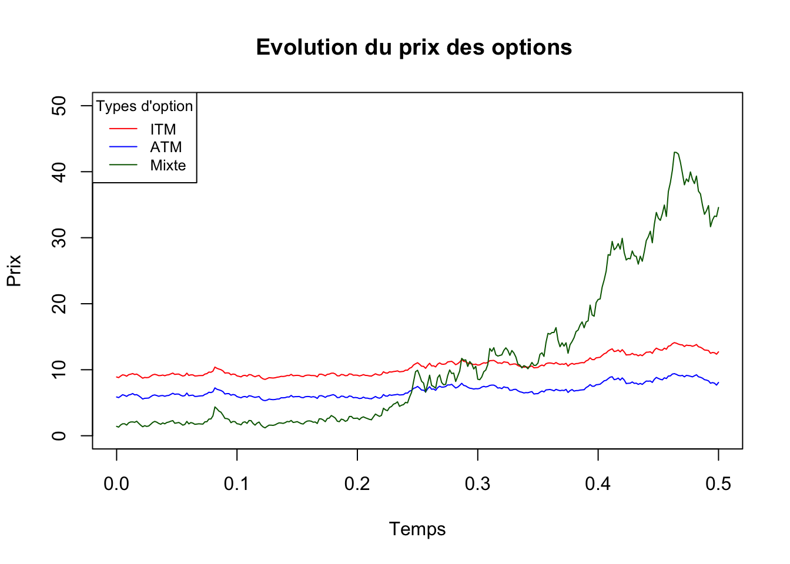
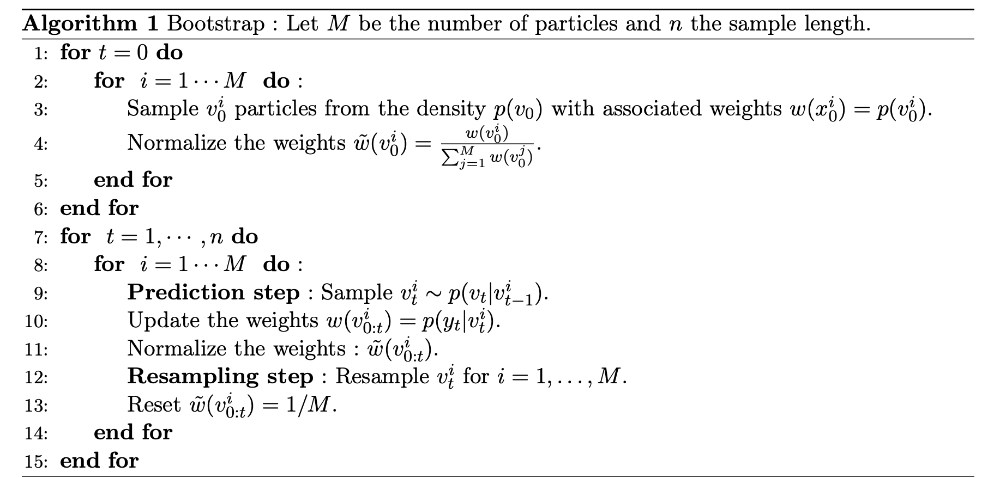
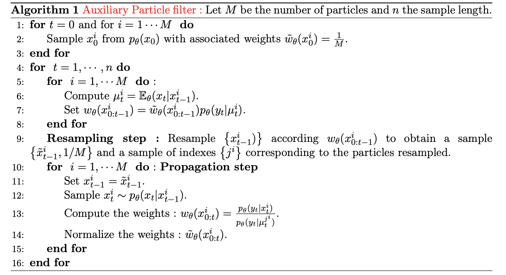
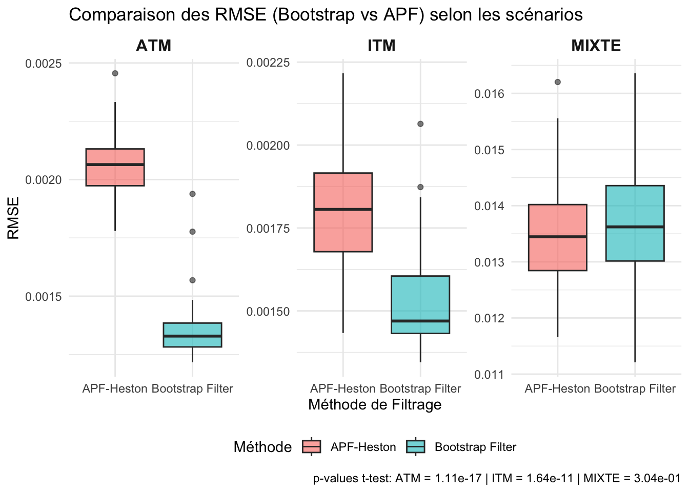

1 Méthodes : étude de simulation sur la performance du filtre APF
1.1 Modèle utilisé
Le filtre particulaire APF (Auxiliary Particle Filter) est un filtre particulaire qui utilise des particules auxiliaires pour estimer la densité de probabilité de l’état caché. Il est utilisé pour estimer l’état caché d’un système dynamique non linéaire. Dans cet article, nous allons étudier la performance du filtre APF en utilisant un exemple simple.
Comme tout filtre particulaire, il est necessaire de spécifier la distribution a priori de l’état, i.e. \(p(x_0)\), la distribution de transition, i.e. \(p(v_t|v_{t-1})\) et la vraisemblance, i.e. \(p(y_t|v_t)\).
Dans le modèle de Heston spécifié en (1), on considère que : \[
p(v_t|v_{t-1})=2c\chi^2(2cx_k; 2q + 2; 2ce^{-\kappa \Delta} x_{k−1}),
\]
\[p(v_1) = \Gamma(v_1; a,b)\] où \(a = \frac{2 \kappa \theta}{\sigma^2}\) et \(b = \frac{2 \kappa}{\sigma^2}\),
Pour tester la pertinence de l’APF, nous allons utiliser les paramètres suivants \(\Phi = (\theta = 0.03, \kappa = 4, \sigma = 0.4, \kappa = -0.87, \rho = 0.5)\). Pour passer en temps discret et assurer la positivité de la volatilité, nous utilisosn le schema d’euler (à \(|v_t|\)) suivant :
où \(\varepsilon_t \sim N(0,h=0.01)\), et \(w_t^1, w_t^2\) sont des variables aléatoires gaussiennes et indépendantes.
Nous avons utilisé un schéma d’euler modifié pour garantir la positivité de la volatilité. En effet, la volatilité doit être positive dans le modèle de Heston, et le schéma d’euler standard peut produire des valeurs négatives. En prenant la valeur absolue de la volatilité à chaque étape, nous nous assurons que les valeurs restent positives. Il aurait été également possible d’utiliser le schéma d’euler à \(ln(v_t)\) (via le lemme de ito) pour garantir la positivité de la volatilité.
Show the code
rm(list=ls())################ Simulation de la trajectoire de St et vt ################ Heston_sim <-function(N, kappa, theta, sigma, rho, v0, mu, tau, S0){# N: Number of time steps dt <- tau / N # Time step# Store stock prices and volatilities S <-numeric(N+1) v <-numeric(N+1) S[1] <- S0 v[1] <- v0for (t in1:N){# Generate correlated Brownian motions W1 <-rnorm(1) W2 <- rho * W1 +sqrt(1- rho^2) *rnorm(1)# Euler discretization of variance process (ensure non-negativity) v[t+1] <-abs(v[t] + kappa * (theta - v[t]) * dt + sigma *sqrt(v[t] * dt) * W2)# Euler discretization of the stock price process S[t+1] <- S[t] * (1+ mu*dt +sqrt(v[t+1] * dt) * W1) }return(list(v_t = v, S_t=S))}
Avec les étapes 1 et 2, nous obtenons les trajectoires de volatilité instantanée et de prix d’action suivantes :
Tout d’abord, une trajectoire de 300 pas de temps de la variance instantanée sera simulée pour un pas de 1 jour, en commençant par \(v_0\) = 0,03.
Conditionnellement à cette trajectoire, une trajectoire correspondante du prix de l’action sera alors générée.
Nous calculons, à l’aide du modèle de Heston, les prix d’options bruités pour trois types d’options différents : une option à la monnaie (ATM), une option dans la monnaie (ITM) et une option mixte (50 % ITM / 50 % OTM).
Nous avons choisi trois types d’options afin d’observer comment le filtre APF se comporte dans différentes conditions de marché :
Option à la monnaie (ATM) :
Prix d’exercice : K = 1 × S_t
Temps avant l’échéance : τ = 0.5 Les options ATM sont souvent utilisées pour l’estimation de la volatilité implicite, car elles sont les plus liquides et présentent un delta proche de 0.5, ce qui les rend sensibles aux variations du sous-jacent.
Option dans la monnaie (ITM) :
Prix d’exercice : K = 0.95 × S_t
Temps avant l’échéance : τ = 0.5 Les options ITM ont une valeur intrinsèque élevée et une volatilité implicite plus stable. Elles sont moins sensibles aux fluctuations immédiates du marché mais permettent d’évaluer l’impact du filtre APF dans des conditions de faible variance du prix d’option.
Option mixte (50 % ITM / 50 % OTM) :
Prix d’exercice : K = 117
Temps avant l’échéance : τ = 0.5 Cette approche permet de tester le filtre APF dans un scénario réaliste de portefeuille d’options où des positions ITM et OTM sont combinées. L’objectif est d’analyser si le filtre reste stable lorsque l’on mélange des options avec des sensibilités différentes aux mouvements du sous-jacent et aux variations de volatilité.
L’objectif de cette analyse est de vérifier comment le filtre APF se comporte en présence de conditions de marché variées :
Options ATM : impact fort de la volatilité, mais moins sujettes au risque de gamma.
Options ITM : faible sensibilité à la volatilité implicite, mais risque de couverture plus limité.
Options mixtes : évaluation de la robustesse du filtre lorsque plusieurs types d’options coexistent dans un même portefeuille.
Ces tests permettent de comparer la précision du filtre en fonction de la position de l’option par rapport au prix du sous-jacent.
Show the code
################ Simulation du prix des options ATM ################ source("data/Heston_Call_Function.R")set.seed(123)v_t <- res$v_t S_t <- res$S_th <-0.01# Prix d'option K=1*S, tau = 0.5 => A la monnaier <-5/100tau <-0.5K <-1ATM <-numeric(N+1)for(i inc(0:N+1)){ATM[i] <-HestonCallClosedForm(lambda = kappa, vbar = theta, eta = sigma, rho = rho, v0 = v_t[i], r = r, tau = tau, S0 = S_t[i], K = K * S_t[i])}res$ATM <- ATM +rnorm(1,mean=0,sd=sqrt(h))################ Simulation du prix des options ITM ################ # Prix d'option K=0.95*S, tau = 0.5 => Hors de la monnaier <-5/100tau <-0.5K <-0.95ITM <-numeric(N+1)for(i inc(0:N+1)){ITM[i] <-HestonCallClosedForm(lambda = kappa, vbar = theta, eta = sigma, rho = rho, v0 = v_t[i], r = r, tau = tau, S0 = S_t[i], K = K * S_t[i])}res$ITM <- ITM +rnorm(1,mean=0,sd=sqrt(h))################ Simulation du prix des options mixte ################ summary(S_t)
Min. 1st Qu. Median Mean 3rd Qu. Max.
99.49 104.36 117.23 119.24 128.88 156.89
Show the code
# Prix d'option K=117, tau = 0.5 => moitié ITM et moitié OTMr <-5/100tau <-0.5K <-117MIXTE <-numeric(N+1)for(i inc(0:N+1)){MIXTE[i] <-HestonCallClosedForm(lambda = kappa, vbar = theta, eta = sigma, rho = rho, v0 = v_t[i], r = r, tau = tau, S0 = S_t[i], K = K)}res$MIXTE <- MIXTE +rnorm(1,mean=0,sd=sqrt(h))
1.1.1.1 Prix d’options simulés
En simulant le prix de ces options, nous constatons sans surprise que les options mixte ont un prix plus élevé plus on se rapproche de la maturité. Cependant, les options ITM et ATM ont des prix plus stables, avec une légère augmentation pour les options ITM.
Show the code
N <-length(res$ITM) dt <- tau / Ntime_axis <-seq(0, tau, length.out = N) # Axe des temps, de 0 à tauplot(time_axis,res$ITM, type="l", main ="Evolution du prix des options ", ylim =c(0,50), col ="red", ylab ="Prix", xlab ="Temps")lines(time_axis,res$ATM, type ="l",col="blue")lines(time_axis,res$MIXTE, type='l', col="darkgreen")# legendlegend("topleft", legend=c("ITM", "ATM", "Mixte"), col=c("red", "blue",'darkgreen'), lty=1:1, cex=0.8, title="Types d'option")

1.1.1.2 Filtres utilisés
L’objectif est de comparer les résultats de l’APF sur du filtre particulaire bootstrap en termes d’erreurs d’ajustement, mesurées par les erreurs quadratiques moyennes (RMSE) de l’ajustement de la variance et de l’ajustement des prix des options, dans différents cas de données.
Filtre bootstrap :
Le filtre boostrap fonctionne de la manière suivante :

Bootstrap filter
Dans le cadre du modèle de heston, nous avons implémenté le filtre bootstrap de la manière suivante :
Show the code
BootstrapParticleFilter <-function(y, S, v, K, tau =0.5, M =200, theta =0.03, kappa =4, sigma =0.4, rho =0.5, r =0.05, dt =1, h =0.01) {# Paramètres supplémentaires sigma_epsilon <-sqrt(h)# Paramètres de la loi stationnaire de v alpha1 <- (2* kappa * theta) / (sigma^2) alpha2 <- (sigma^2) / (2* kappa)# Initialisation n <-length(y) v_hat <-numeric(n) v_particle <-matrix(nrow = n, ncol = M) w <-matrix(nrow = n, ncol = M) w_normalized <-matrix(nrow = n, ncol = M)# Filtre particulaire bootstrapfor (t in1:n) {if (t ==1) {# Initialisation des particules à t = 0 v_particle[t, ] <-rgamma(M, shape = alpha1, rate =1/alpha2)# Poids initiaux basés sur la densité de la loi stationnaire w[t, ] <-dgamma(v_particle[t, ], shape = alpha1, rate =1/alpha2)# Normalisation des poids w_normalized[t, ] <- w[t, ] /sum(w[t, ])# Estimation initiale v_hat[t] <-sum(w_normalized[t, ] * v_particle[t, ]) } else {# Étape de prédiction (propagation des particules) v_particle[t, ] <-abs(rnorm(M, mean = v_particle[t-1, ] + kappa * (theta - v_particle[t-1, ]) * dt, sd = sigma *sqrt(v_particle[t-1, ] * dt)))# Calcul du prix du Call pour chaque particule C <-numeric(M)# Si K est un unique scalaire (strike constant), on le conserve# Si K est un vecteur, on prend K[t] comme strike au temps tif (length(K) ==1) { Kt <- K # Strike constant } else { Kt <- K[t] # Strike spécifique au temps t }# Calcul pour chaque particule avec le bon strikefor (i in1:M) { C[i] <-HestonCallClosedForm(lambda = kappa, vbar = theta, eta = sigma, rho = rho, v0 = v_particle[t, i], r = r, tau = tau, S0 = S[t], K = Kt) }# Mise à jour des poids (vraisemblance observation-conditionnelle) w[t, ] <-dnorm(y[t], mean = C, sd =sqrt(sigma_epsilon))# Normalisation des poids w_normalized[t, ] <- w[t, ] /sum(w[t, ])# Rééchantillonnage index <-sample(1:M, size = M, prob = w_normalized[t, ], replace =TRUE) v_particle[t, ] <- v_particle[t, index]# Poids uniformes après resampling w_normalized[t, ] <-rep(1/ M, M)# Estimation de la volatilité instantanée v_hat[t] <-sum(w_normalized[t, ] * v_particle[t, ]) } }return(v_hat)}
Filtre APF :
Le filtre particulaire auxilaire fonctionne de la manière suivante :

APF
Dans le cadre du modèle de heston, nous avons implémenté le filtre APF de la manière suivante :
Show the code
APF_Heston <-function(y, S, v,K, M =200, theta =0.03, kappa =4, sigma =0.4, lambda =-0.87, rho =0.5, r =0.05, tau =0.5, dt =1, h =0.01) {# Paramètres de la loi stationnaire de v sigma_epsilon <-sqrt(h) alpha1 <- (2* kappa * theta) / (sigma^2) alpha2 <- (sigma^2) / (2* kappa)# Initialisation des paramètres n <-length(y)# Initialisation des vecteurs/matrices v_hat <-numeric(n) v_particle <-matrix(nrow = n, ncol = M) mu <-matrix(nrow = n, ncol = M) py_mu <-matrix(nrow = n, ncol = M) w <-matrix(nrow = n, ncol = M) w_normalized <-matrix(nrow = n, ncol = M)# Filtre particulaire APFfor (t in1:n) {if (t ==1) { v_particle[t, ] <-rgamma(M, shape = alpha1, rate =1/alpha2) w[t, ] <-rep(1/ M, M) w_normalized[t, ] <- w[t, ] /sum(w[t, ]) v_hat[t] <-sum(w_normalized[t, ] * v_particle[t, ]) } else {# Si K est un unique scalaire (strike constant), on le conserve# Si K est un vecteur, on prend K[t] comme strike au temps tif (length(K) ==1) { Kt <- K # Strike constant } else { Kt <- K[t] # Strike spécifique au temps t }# 1 - Pré-sélection mu[t, ] <-abs(v_particle[t-1, ] + kappa * (theta - v_particle[t-1, ]) * dt) mean_pymu <-numeric(M)for (i in1:M) { mean_pymu[i] <-HestonCallClosedForm(lambda = kappa, vbar = theta, eta = sigma, rho = rho, v0 = mu[t, i], r = r, tau = tau, S0 = S[t], K = Kt) } py_mu[t, ] <-dnorm(y[t], mean = mean_pymu, sd = sigma_epsilon)# Poids pour la pré-sélection w[t-1, ] <- py_mu[t, ] * w_normalized[t-1, ]# 2 - Resampling (échantillonnage) index <-sample(1:M, size = M, replace =TRUE, prob = w[t-1, ])# Mise à jour des particules v_particle[t-1, ] <- v_particle[t-1, index]# 3 - Propagation (évolution des particules) v_particle[t, ] <-abs(rnorm(M, mean = v_particle[t-1, ] + kappa * (theta - v_particle[t-1, ]) * dt, sd = sigma *sqrt(v_particle[t-1, ] * dt)))# Mise à jour des poids C <-numeric(M)for (i in1:M) { C[i] <-HestonCallClosedForm(lambda = kappa, vbar = theta, eta = sigma, rho = rho, v0 = v_particle[t, i], r = r, tau = tau, S0 = S[t], K = Kt) } likelihood <-dnorm(y[t], mean = C, sd = sigma_epsilon) w[t, ] <- likelihood / (py_mu[t, index] +1e-12) # Protection pour éviter la division par zéro w_normalized[t, ] <- w[t, ] /sum(w[t, ]) v_hat[t] <-sum(w_normalized[t, ] * v_particle[t, ]) } }# Retourner les résultatsreturn(v_hat)}
Différence entre le filtre bootstrap et le filtre APF :
Le filtre bootstrap et le filtre APF sont deux méthodes de filtrage particulaire qui permettent d’estimer l’état caché d’un système dynamique non linéaire. La principale différence entre ces deux méthodes réside dans la manière dont elles mettent à jour les poids des particules, et ainsi comme la distribution d’importance q est construite. Par définition, les poids sont définis par : \[
w(x_t) = w(x_{t-1}) \frac{p(y_t|x_t)p(x_t|x_{t-1})}{q(x_t|x_{t-1},y_t)},
\] où \(p(y_t|x_t)\) est la vraisemblance, \(p(x_t|x_{t-1})\) est la distribution de transition, et \(q(x_t|x_{t-1},y_t)\) est la distribution d’importance.
Dans le cadre du filtre bootstrap, la distribution d’importance est définie comme suit : \[
q(x_t|x_{t-1},y_t) = p(x_t|x_{t-1}).
\] De ce fait, \(w(x_t) = w(x_{t-1}) p(y_t|x_t)\).Cela signifie que les poids sont mis à jour en fonction de la distribution de transition et de la vraisemblance.
Dans le cadre du filtre APF, la distribution d’importance se rapproche de la distribution optimale, vu dans la littérature comme étant \(q(x_t|x_{t-1},y_t) = p(x_t|x_{t-1},y_t)\). De ce fait, les poids sont mis à jour en fonction de la vraisemblance conditionnelle, ce qui permet d’améliorer la précision de l’estimation de l’état caché, et donc de l’estimation de la volatilité dans notre cas.
2 Résultats
2.1 Option à la monnaie (ATM)
2.1.1 Filtre bootstrap
Show the code
##################### Définition des paramètres ###################### Définition des paramètres phitheta <-0.03kappa <-4sigma <-0.4lambda <--0.87# Prime de risquerho <-0.5# Paramètres de Heston h <-0.01r <-0.05# Prix de call (y), du sous-jacent (S), et volatilité instantanée (v)y <- res$ATMS <- res$S_tv<- res$v_t# Initialisation des paramètresn <-length(y) # Nombre d'observationsM <-200# Nombre de particulesdt <-1
Show the code
set.seed(123)# Paramètres de l'option K <-1* Stau<-0.5# Exemple d'appel avec tes données "res"et_boot_atm <-system.time({boot_atm <-BootstrapParticleFilter(y=y, S=S, v=v, K=K, tau = tau, M = M, theta = theta, kappa = kappa, sigma = sigma, rho = rho, r = r, dt = dt, h = h)})
Show the code
plot(v, type ="l", col ="black", main ="Estimation de la volatilité avec un filtre bootstrap",xlab ="Temps", ylab ="Volatilité")lines(boot_atm, type ="l", col ="red")legend("topright", legend =c("Vol. obs.", "Vol. est."), col =c("black", "red"), lty =1)
set.seed(123)et_apf_atm <-system.time({apf_atm <-APF_Heston(y=y, S=S, v=v, K=K, tau = tau, M = M, theta = theta, kappa = kappa, sigma = sigma, rho = rho, r = r, dt = dt, h = h)})
Show the code
plot(v, type ="l", col ="black", main ="Estimation de la volatilité avec un filtre APF",xlab ="Temps", ylab ="Volatilité")lines(apf_atm, type ="l", col ="red")legend("topright", legend =c("Vol. obs.", "Vol. est."), col =c("black", "red"), lty =1)
set.seed(123)y <- res$ITMK <-0.95* Set_boot_itm <-system.time({boot_itm <-BootstrapParticleFilter(y=y, S=S, v=v, K=K, tau = tau, M = M, theta = theta, kappa = kappa, sigma = sigma, rho = rho, r = r, dt = dt, h = h)})
Show the code
plot(v, type ="l", col ="black", main ="Estimation de la volatilité avec un filtre bootstrap",xlab ="Temps", ylab ="Volatilité")lines(boot_itm, type ="l", col ="red")legend("topright", legend =c("Vol. obs.", "Vol. est."), col =c("black", "red"), lty =1)
et_apf_itm <-system.time({apf_itm <-APF_Heston(y=y, S=S, v=v, K=K, tau = tau, M = M, theta = theta, kappa = kappa, sigma = sigma, rho = rho, r = r, dt = dt, h = h)})
Show the code
plot(v, type ="l", col ="black", main ="Estimation de la volatilité avec un filtre APF",xlab ="Temps", ylab ="Volatilité")lines(apf_itm, type ="l", col ="red")legend("topright", legend =c("Vol. obs.", "Vol. est."), col =c("black", "red"), lty =1)
set.seed(123)y <- res$MIXTEK <-117et_boot_mixte <-system.time({boot_mixte <-BootstrapParticleFilter(y=y, S=S, v=v, K=K, tau = tau, M = M, theta = theta, kappa = kappa, sigma = sigma, rho = rho, r = r, dt = dt, h = h)})
Show the code
plot(v, type ="l", col ="black", main ="Estimation de la volatilité avec un filtre bootstrap",xlab ="Temps", ylab ="Volatilité")lines(boot_mixte, type ="l", col ="red")legend("topright", legend =c("Vol. obs.", "Vol. est."), col =c("black", "red"), lty =1)
et_apf_mixte <-system.time({apf_mixte <-APF_Heston(y=y, S=S, v=v, K=K, tau = tau, M = M, theta = theta, kappa = kappa, sigma = sigma, rho = rho, r = r, dt = dt, h = h)})
Show the code
plot(v, type ="l", col ="black", main ="Estimation de la volatilité avec un filtre APF",xlab ="Temps", ylab ="Volatilité")lines(apf_mixte, type ="l", col ="red")legend("topright", legend =c("Vol. obs.", "Vol. est."), col =c("black", "red"), lty =1)
── Attaching core tidyverse packages ──────────────────────── tidyverse 2.0.0 ──
✔ dplyr 1.1.4 ✔ readr 2.1.5
✔ forcats 1.0.0 ✔ stringr 1.5.1
✔ ggplot2 3.5.1 ✔ tibble 3.2.1
✔ lubridate 1.9.4 ✔ tidyr 1.3.1
✔ purrr 1.0.2
── Conflicts ────────────────────────────────────────── tidyverse_conflicts() ──
✖ dplyr::filter() masks stats::filter()
✖ dplyr::lag() masks stats::lag()
ℹ Use the conflicted package (<http://conflicted.r-lib.org/>) to force all conflicts to become errors
Show the code
# Création du data.frame avec les colonnes demandéescomp_perf <-data.frame( Méthode =c("APF", "APF", "APF", "BOOT", "BOOT", "BOOT"),Type_Option =c("ATM", "ITM", "MIXTE", "ATM", "ITM", "MIXTE"),RMSE =c(rmse_apf_atm, rmse_apf_itm, rmse_apf_mixte, rmse_boot_atm, rmse_boot_itm, rmse_boot_mixte))# Conversion : Méthode comme colonnecomp_perf_wide <-pivot_wider( comp_perf,names_from = Méthode, # Ce qui devient les colonnesvalues_from = RMSE # Ce qui remplit les cases)comp_perf_wide <-bind_rows( comp_perf_wide,data.frame(Type_Option ="Moyenne",APF =mean(c(rmse_apf_atm, rmse_apf_itm, rmse_apf_mixte), na.rm =TRUE),BOOT =mean(c(rmse_boot_atm, rmse_boot_itm, rmse_boot_mixte), na.rm =TRUE) ))# Affichage du résultatcomp_perf_wide
Type_Option
APF
BOOT
ATM
0.0018893
0.0014028
ITM
0.0018509
0.0015202
MIXTE
0.0147518
0.0159564
Moyenne
0.0061640
0.0062931
Show the code
# Comparaison des temps d'exécutioncomp_temps <-data.frame( Méthode =c("APF", "APF", "APF", "BOOT", "BOOT", "BOOT"),Type_Option =c("ATM", "ITM", "MIXTE", "ATM", "ITM", "MIXTE"),Temps =c(et_apf_atm[3], et_apf_itm[3], et_apf_mixte[3], et_boot_atm[3], et_boot_itm[3], et_boot_mixte[3]))# Conversion : Méthode comme colonnecomp_temps_wide <-pivot_wider( comp_temps,names_from = Méthode, # Ce qui devient les colonnesvalues_from = Temps # Ce qui remplit les cases)comp_temps_wide <-bind_rows( comp_temps_wide,data.frame(Type_Option ="Moyenne",APF =mean(c(et_apf_atm[3], et_apf_itm[3], et_apf_mixte[3]), na.rm =TRUE),BOOT =mean(c(et_boot_atm[3], et_boot_itm[3], et_boot_mixte[3]), na.rm =TRUE) ))# Affichage du résultatcomp_temps_wide
Type_Option
APF
BOOT
ATM
24.87400
12.48800
ITM
23.79400
12.01200
MIXTE
24.50900
12.37100
Moyenne
24.39233
12.29033
En comparant les performances de l’APF à celles du filtre bootstrap, nous constatons que les deux filtres ont des performances assez similaires en termes d’erreurs d’ajustement (RMSE) pour les options ATM et ITM. Cependant, l’APF semble être plus efficace pour les options mixtes, avec des erreurs d’ajustement plus faibles que le filtre bootstrap. Cependant, en termes de temps d’exécution, le filtre bootstrap est plus rapide que l’APF pour les trois types d’options. En moyenne, l’APF est plus lent que le filtre bootstrap, mais offre une meilleure précision tout option confondue.
Pou connaitre la robustesse de ces estimations, nous avons fait du bootstrap pour estimer la distribution des RMSE, et ainsi obtenir des intervalles de confiance pour ces estimations, de même que des p-valeurs. Le code ayant servi à la simulation est disponible ici.
Show the code
library(ggplot2)library(dplyr)library(ggpubr)# Charger les résultats du bootstrapres_ATM <-readRDS("results_sim/res_ATM_min.rds")res_ITM <-readRDS("results_sim/res_ITM_min.rds")res_MIXTE <-readRDS("results_sim/res_MIXTE_min.rds")# Extraire les RMSErmse_bootstrap_atm <- res_ATM$t[, 1]rmse_apf_atm_b <- res_ATM$t[, 2]rmse_bootstrap_itm <- res_ITM$t[, 1]rmse_apf_itm_b <- res_ITM$t[, 2]rmse_bootstrap_mixte <- res_MIXTE$t[, 1]rmse_apf_mixte_b <- res_MIXTE$t[, 2]# Créer un dataframe avec les valeurs RMSE pour les trois scénariosdf_rmse_boxplot <-data.frame( Méthode =rep(c("Bootstrap Filter", "APF-Heston"), each =c(length(rmse_bootstrap_atm), length(rmse_apf_atm_b), length(rmse_bootstrap_itm), length(rmse_apf_itm_b),length(rmse_bootstrap_mixte), length(rmse_apf_mixte_b))),RMSE =c(rmse_bootstrap_atm, rmse_apf_atm_b, rmse_bootstrap_itm, rmse_apf_itm_b, rmse_bootstrap_mixte, rmse_apf_mixte_b), Scénario =rep(c("ATM", "ATM", "ITM", "ITM", "MIXTE", "MIXTE"), each =c(length(rmse_bootstrap_atm), length(rmse_apf_atm_b),length(rmse_bootstrap_itm), length(rmse_apf_itm_b),length(rmse_bootstrap_mixte), length(rmse_apf_mixte_b))))
Warning in rep(c("Bootstrap Filter", "APF-Heston"), each =
c(length(rmse_bootstrap_atm), : first element used of 'each' argument
Warning in rep(c("ATM", "ATM", "ITM", "ITM", "MIXTE", "MIXTE"), each =
c(length(rmse_bootstrap_atm), : first element used of 'each' argument
Show the code
# Calcul des p-valeurs# kruskall wallistest_atm <-kruskal.test(list(rmse_bootstrap_atm, rmse_apf_atm_b))$p.valuetest_itm <-kruskal.test(list(rmse_bootstrap_itm, rmse_apf_itm_b))$p.valuetest_mixte <-kruskal.test(list(rmse_bootstrap_mixte, rmse_apf_mixte_b))$p.value# test_atm <- t.test(rmse_bootstrap_atm, rmse_apf_atm_b)$p.value# test_itm <- t.test(rmse_bootstrap_itm, rmse_apf_itm_b)$p.value# test_mixte <- t.test(rmse_bootstrap_mixte, rmse_apf_mixte_b)$p.value# Création du boxplot avec facet_wrap et ajout des p-valeurs en captionggplot(df_rmse_boxplot, aes(x = Méthode, y = RMSE, fill = Méthode)) +geom_boxplot(alpha =0.6) +facet_wrap(~Scénario, scales ="free_y") +labs(title ="Comparaison des RMSE (Bootstrap vs APF) selon les scénarios",x ="Méthode de Filtrage",y ="RMSE",caption =paste("p-values t-test: ATM =", formatC(test_atm, format ="e", digits =2),"| ITM =", formatC(test_itm, format ="e", digits =2),"| MIXTE =", formatC(test_mixte, format ="e", digits =2))) +theme_minimal() +theme(legend.position ="bottom",strip.text =element_text(size =12, face ="bold"))

Show the code
# Concaténer toutes les RMSEtotal_rmse_bootstrap <-c(rmse_bootstrap_atm, rmse_bootstrap_itm, rmse_bootstrap_mixte)total_rmse_apf <-c(rmse_apf_atm_b, rmse_apf_itm_b, rmse_apf_mixte_b)# Kruskal wallis testglobal_pval <-kruskal.test(list(total_rmse_bootstrap, total_rmse_apf))$p.value# global_pval <- t.test(total_rmse_bootstrap, total_rmse_apf)$p.value# Boxplot globalggboxplot(df_rmse_boxplot, x ="Méthode", y ="RMSE", fill ="Méthode",ylab ="RMSE", xlab ="Méthode de Filtrage",title ="Comparaison des RMSE (Bootstrap vs APF) pour les trois scénarios") +labs(caption =paste("p-values: Global =", formatC(global_pval, format ="e", digits =2))) +theme_minimal()
Conclusion : L’APF est une méthode plus précise que le filtre bootstrap pour estimer la volatilité instantanée dans le cadre d’un modèle de Heston où le prix est bruité \(h=0.01\), mais elle est également plus lente en termes de temps d’exécution. Le choix entre ces deux méthodes dépendra donc des besoins spécifiques de l’analyse, en fonction de la précision et de la vitesse d’exécution requises.
Pour tester la robustesse de ces estimations, il aurait fallu faire du bootstrap afin d’estimer la distribution des RMSE, et ainsi obtenir des intervalles de confiance pour ces estimations.
Il aurait été interessant de tester les filtres dans d’autres cas de figures.